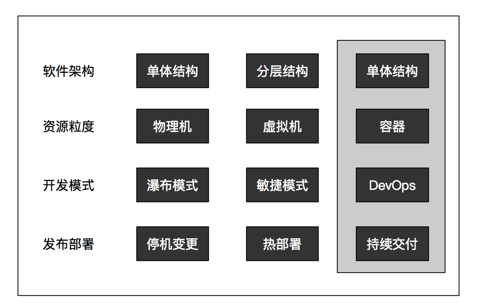

SRE的理念核心是，用软件工程的方法重新设计和定义运维工作
在微服务架构模式下，我们必须换一个思路来重新定义和思考运维，运维一定要与微服务架构本身紧密结合起来
合理的组织架构是保障技术架构落地的必要条件，用技术手段来解决运维过程中遇到的效率和稳定性问题才是根本解决方案
Owner意识很很重要，正确的做事方式需要引导，这就是优秀和极致的距离
应用业务模型，也就是每个应用对外提供的业务服务能力，以API的方式暴露给外部
微服务架构模式下的运维思路一定要转变，一定要将视角转换到应用这个维度，从一开始就要统一规划，从一开始就要将架构、开发和运维的工作拉通了去看，这一点与传统运维的思路是完全不同的
标准化，可以说是运维过程中最基础、最重要的一项工作，但也是最容易被忽视的一个环节
标准化的过程实际上就是对运维对象的识别和建模过程
标准化的步骤：
1）识别对象
2）识别对象属性
3）识别对象关系
4）识别对象场景
基础设施层面的标准化：
应用层面的标准化：
常见的分布式基础架构组件：
分布式服务化框架：Dubbo、Spring Cloud等
分布式缓存及框架：Redis、Memcache，框架如Codis、Redis Cluster等
数据库及分布式数据库框架：MySQL、MariaDB，中间件如淘宝的TDDL（DRDS）、Sharding-JDBC等
分布式的消息中间件：Kafka、RabbitMQ、ActiveMQ以及RocketMQ等
前端接入层部分：四层负载LVS、七层负载Nginx或Apache，硬件负载F5等
运维的职责：
应用的生命周期：
1.应用的创建阶段：确认应用的基础信息与基础服务的关系，同时要固化下来
2.应用的研发阶段：主要是业务逻辑实现和验证的阶段
3.应用的上线阶段：一个过滤阶段，从应用创建过渡到线上运行
4.应用的运行阶段：应用生命周期中最重要、最核心的阶段
应用最重要的属性就是应用本身及其相关联的基础服务的各项运行指标
应用是线上业务逻辑的执行载体
仍然会依赖到上述应用研发阶段的持续集成过程，并最终与线上发布形成持续交付这样一个闭环体系
应用之间依赖管理和链路跟踪的场景
应用线上运行还会面临外部业务量的各种异常变化 ，以及应用自身所依赖的基础设施、基础服务以及应用服务的各种异常状况
线上稳定性保障的场景
5.应用的销毁阶段：围绕着某个应用所产生的基础设施、基础服务以及关联关系都要被一并清理，否则将会给系统造成许多无源（源头）的资源浪费
CMDB，Configuration Management DataBase，配置管理数据库，是与IT系统所有组件相关的信息库，它包含IT基础架构配置项的详细信息
CMDB是面向资源的管理，应用配置是面向应用的管理
CMDB是运维的基石，但是要发挥出更大的价值，只有基础是不够的，我们要把更多的精力放到上层的应用和价值服务上，可见应用才是运维的核心
业务架构决定了技术架构，而技术架构又决定了一个研发团队的组织架构，在这个组织架构中不同的团队单元分别承担着对应业务的需求开发和实现的职责
业务架构拆分是否合理、职责是否明晰，决定了后续团队组织架构是否合理、团队职责是否明晰。如果这点没做好，到了运维阶段必然就是混乱的
要看一个应用出现故障，是不是会影响业务收，如果影响就属于核心应用，如果不影响或者影响非常小，就属于非核心应用
从价值呈现角度看运维
运维的组织架构
SRE，直译过来是网站稳定性工程师，是以稳定性为目标，围绕着稳定这个核心，负责可用性、时延、性能、效率、变更管理、监控、应急响应和容量管理等相关工作：
运维的服务心态：
只要进行有效的引导，同时具备运维和开发能力是不成问题的
云计算和AI带给我们的：持续交付以及稳定性保障体系。只需考虑跟业务自身相结合，无须考虑平台。与业务结合，就会有比较个性和独立的地方
持续交付覆盖了应用的整个生命周期，涉及产品、开发、测试、运维以及项目管理等相关方面
持续交付代表着从业务需求开始到交付上线之后的端到端的过程
持续交付的关键点，六个部分：
1.配置管理
2.需求拆解
3.提交管理
4.构建打包
5.自动化测试
6.部署发布
一定要做到代码和配置的分离。不要让配置写死在代码里，这需要依靠严格的规范和约束
代码配置是是跟业务或代码逻辑相关的，动一下就会改变系统执行状态，是运行时配置，但不依赖周边环境。
应用配置是跟业务和代码逻辑无关的，不管你怎么动，业务配置框架不会改变的，但是它跟环境相关
应用配置与环境相关，按阶段分又大致可以分为两个阶段、三种情况：
主要包括五个环境：开发环境、集成环境、预发环境、Beta环境、线上环境
持续交付过程中涉及应用配置管理的属性和关系：
环境配置管理解决方案：
环境分类：线下环境和线上环境在网段上是要被严格隔离的
环境建设关键技术点：
1.网段规划
2.服务化框架的单元化调用
3.环境的域名访问策略
4.自动化管理
用户和业务场景的概念，就是线下和线上用户场景是完全不同的：线下是我们模拟出来的，而线上却是真实的用户场景，这两者之间会存在巨大差异，有差异，系统的表现状况就会不一样
Beta环境：简单理解，就是从生产环境的集群中，再建立一个独立集群，主要还是针对小规模真实业务流量的。除了承担的流量比重不同，其他与生产环境的应用没有任何差别
预发环境，三个规则要求：
办公网生产环境建设的技术方案与预发环境一致，但是在要求上又有不同：
访问用户是办公网内的员工用户，所以必须连接指定的办公网Wi-Fi接入点
稳定性要求上，办公网生产环境相当于生产环境，虽然不是外部用户访问，但是一家公司内的员工也算是真实用户了，他们发现的问题等同于线上问题，但是级别上会被降低一级处理
建设规模上，公司有上千、上万名员工，他们的频繁访问行为，也会产生一定的业务量，所以综合上述稳定性要素，办公网生产环境在规模上会根据应用容量进行相应的资源分配，这里至少每个应用应该以两个实例做冗余
主干开发模式：将所有代码变更直接提交到master分支上，这种情况比较适合规模较大的应用，这类应用自身集中了所有的需求功能点，且需求串行开发，需要多人协作共同完成同一个需求，发布时间点明确统一
gitflow开发模式：在master分支之外 ，会有一条常驻的develop开发分支，所有功能开发和缺陷修复都在这个分支上再建立分支。发布时合入一个从master分支中签出的release分支，最终发布的是release分支代码，然后release分支再合并回master和develop分支。能够适应并行开发，能够从技术层面帮我们解决各种分支合并问题。在代码相对集中的应用场景中更加适用，因此，基于这个应用完成较多的并行需求，就需要通过多个分支来管理
分支开发模式：功能开始或缺陷修复从master签出一个独立的feature或bug分支，发布前从master分支签出一个release分支，并将要发布的feature或bug分支合入。发布完成后，release分支将合入master分支
极端业务场景：
极端业务场景在技术上的挑战：
1.运维自动化：标准化覆盖面是否足够广泛，应用体系是否完善，持续交付流水线是否高效，云上资源获得是否足够迅速，这些都是运维自动化的基础，特别是对于不可预测性，考验的就是自动化程度如何
2.容量评估和压测：要时刻对于系统容量水位做到心中有数，特别是核心链路。因为只有对系统容量十分清楚，才能够针对特定场景判断出要扩容哪些应用和部件，扩容多少，扩容顺序如何
3.限流降级：对于非核心的功能，在峰值时刻进行降级，以降低系统压力，分为主动降级和被动降级
4.开关预案：限流降级，也是一类开关，属于业务功能开关，还有一类是系列功能开关
5.故障模拟：最常见的故障场景有CPU异常、RT（响应时间）响应异常、QPS异常等
6.监控体系：所有的指标采集和统计，以及异常判断，都需要监控体系支持，最为基础的支撑平台
极端业务场景下的不确定因素：对于稳定性保障而言，最困难的部分在于业务层面，也就是用户的业务访问模型，但这是不能被准确掌握的，光有技术是没用的，需要我们能够更深入业务，理解业务
容量规划，就是通过对复杂业务场景的分析，运用一定的技术手段，如压力测试，来实现对资源合理扩容、有效规划的过程
容量规划与场景分析
1.先进行单链路压测，达标后再进行多链路压测，最后几轮压测中，将压测流量调整到目标值的120%或150%，来保证系统能够应对足够极端的场景，这样对于100%的目标才能够游刃有余
2.容量问题也不是简单通过资源扩容这种成本投入就可以解决的，扩容是最后的执行手段，但是怎么合理地扩容，科学地扩容，就需要有合理的规划，且当业务体量和复杂度达到一定程度后，就要靠技术人员对业务的深入理解来合理规划业务、技术和数据模型，这需要逐步的经验积累，以及在种类极端场景下的经历
压测系统建设
什么是限流和降级
常见的限流解决方案
限流降级的难点和关键还是在于整体技术栈的统一，以及后期对每个应用限流降级资源策略的准确把握和配置
开关：主要针对单个功能的启用和停止进行控制，或者将功能状态在不同版本之间进行切换
在业务层面，关闭很多非核心功能，只保留交易链路的核心功能
在功能层面，旁路掉缓存，直接将请求转到数据库这一层
一种做法是熔断，自动化旁路，另一种做法通过主动推送开关的方式来实现
预案：可以理解为让应用或业务进行某种特定状态的复杂方案中执行，这个方案最终会通过开关、限流和降级策略这些细粒度的技术来实现，是这些具体技术方案的场景化表现
缓存故障异常：我们首先要做限流，将业务流量限掉三分之一甚至是一半，然后再将功能降级到数据库上
当前在分布式或全链路跟踪监控这个领域，无论是在技术还是产品层面都已经相对成熟，我们完全可以通过对这些产品的调研来选择适合自己的解决方案：
全链路跟踪系统
1.第一个场景，问题定位和排查
2.第二个场景，服务运行状态分析
3.第三类场景，业务全息
故障：
Design for Failure，我们的目标不应该是消除故障，或者不允许故障发生，因为我们无法杜绝，所以我们更应该考虑的是，怎么让系统更健壮，在一般问题面前可以岿然不动，甚至是出现了故障，也能够让业务快速恢复起来
任何一个故障的原因都可以归结到具体的技术和管理问题上，在故障复盘的过程中，通常会聚集在某个故障个例上，归纳出来就是一个个非常具体的改进措施
理解一个系统应该如何工作并不能使人成为专家，要去调查系统为何不能正常工作才行
关于故障的两个观点：
发生故障后，一定要严肃对待，这就需要制定相应的标准和规范来指导我们的处理过程，这个过程并不是一定要找出谁来承担责任，或者一定要进行处罚，而是期望通过这样的过程，让我们能够从故障中深刻地认识到我们存在的不足，并制定出后续的改进措施
定责三个维度：
1）变更执行：比如变更方没有及时通知到受影响方，或者事先没有进行充分的评估，这时出现问题，责任在变更方，如果通知到位，受影响方没有做好准备措施导致出现问题，则责任在受影响方；变更操作的实际影响程度大大超出预期，导致受影响方准备不足而出现故障，责任在变更方
2）服务依赖：比如私自调用接口，或者调用方式不符合约定规则，责任在调用方，如果是服务方没有明确示例或说明，导致调用方出现问题，则责任在服务方；等等
3）第三方责任：比如机房IDC电力故障、服务器故障、运营商网络故障等，如果确实是由不可抗力因素导致的，则责任在第三方，但是如果是因为自身的冗余或故障预案问题导致的，则责任在应用Owner
定责的过程，是找出根因，针对不足找出改进措施，落实责任人。目的，是期望这件事情一定要有人承担责任，并且责任人要能够真真切切地认识到自己的不足之处，能够主导负责改进措施的落地。同时，也让整个团队认识到，我们对于故障的态度一定是严肃严格的
五条高压线规则：
对于管理者来说，对于故障，一定要有容忍度，一定要有耐心。一方面，故障暴露出了我们整体技术架构的不足，但是另一方面，也给我们提供了未来改进的方向。团队成员各方面的能力也得到了锻炼，团队和个人的素养也一定会有大幅度的提升
故障应急
1.业务恢复预案
1）坚守的第一原则：优先恢复业务，而不是定位问题
2）故障模拟：
IDC层面：可以通过人为破坏进行模拟的，模拟手段相对简单，但是破坏力和影响面会很大，做之前一定要准备充分，需要机房配合
系统层面：用Stress工具模拟CPU升高，用dd命令模拟磁盘IO，用tc模拟网络问题
应用层面：在运行时模拟异常情况，然后有针对性地看各种限流降级和开关预案策略能否生效
2.有效的组织协调
故障应急过程就是，工夫要下在平时，注意建设各种工具和平台，同时要尽可能地考虑和模拟各种故障场景
复盘的目的是为了从故障中学习，找到我们在技术和管理上的不足，然后不断改进
切忌将复盘的过程和目的搞成追究责任或实施惩罚，这对于团队氛围和员工积极性的打击是非常大的
复盘会议中的关键环节：
故障简单回顾
故障处理时间线回顾
针对时间线进行讨论
确定故障根因
故障定级定责
发出故障完结报告
上云时考虑的问题：
1.成本闲置问题
2.基础设施维护问题
3.底层技术投入和人才问题
纵观技术发展趋势：

Spring Boot可以支持快速开发单个微服务应用，Spring Cloud则提供了一系列的服务治理框架，具有如服务注册、服务发现、动态路由、负载均衡以及熔断等能力，可以将一个个独立的微服务作为一个整体，进行很好的管理和维护
CNCF核心项目：Kubernetes（K8S）、gRPC、ContainerD、CoreOS，也有与Spring Cloud类似的更通用的服务治理框架，如Linkerd和Envoy
对于我们技术人来说，未来更多更迫切的能力需求将会是，如何利用好业界已有的丰富技术产品和平台，在面对更加丰富多样且复杂的业务领域需求时，能够更加专注于寻找业界解决方案，以更好地将业务和技术连接起来，找到适合业务解决方案的技术并落地实现，而不只专注于技术层面造轮子
在日常思考和工作开展中应该注意以下两点：
页面静态化架构
如何做好技术管理
1.帮助员工做好个人中长期发展目标规划
2.进行梯队建设
3.提升管理意识
技术管理中引以为戒的一些反模式
1.事必躬亲，不懂授权，不敢授权
2.总认为自己才是最正确的
3.仅仅关注技术层面，忽略全局
蘑菇街安全体系简介
1.入网监控：VPN接入的管控
2.堡垒机：硬件或虚拟设备的登录管控，由堡垒机来实现
3.主机安全管控：在每台主机上运行一个安全Agent，实时地对可疑进程、可疑端口、可疑帐号、可疑日志以及种类操作进行监控
4.黑盒扫描：主要针对主机上对外开放的端口和使用的服务进行扫描
5.白盒扫描（代码审计）：会针对代码中明显的漏洞进行审计
6.WAF（Web Application Firewall）：用来对外部的Web服务进行保护
7.应用响应中心SRC：“三分靠技术，七分靠人脉”，安全的信息情报有时比单纯的技术攻防要重要得多